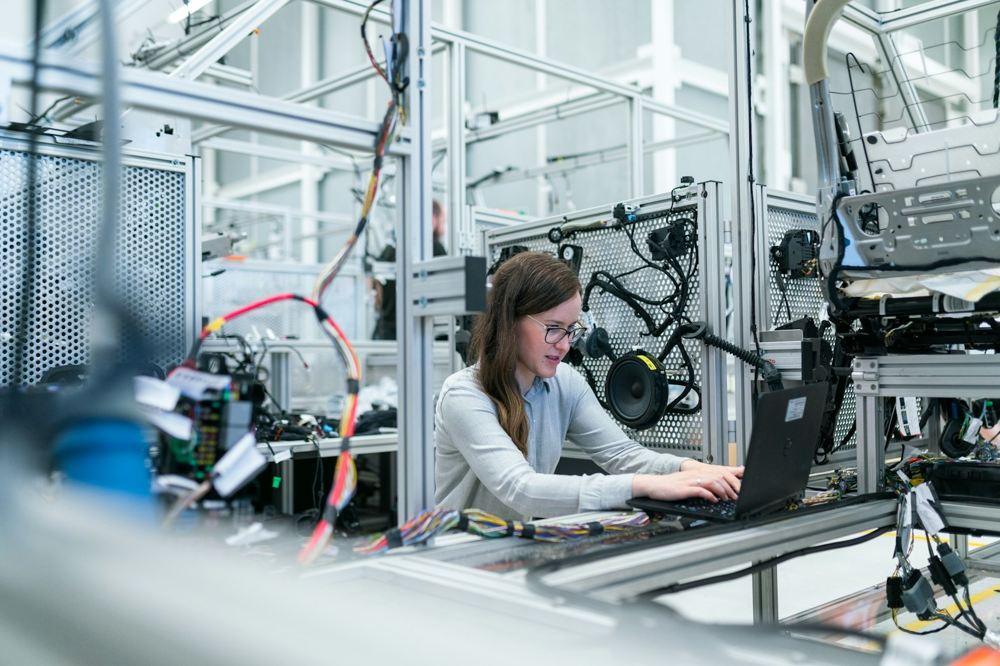
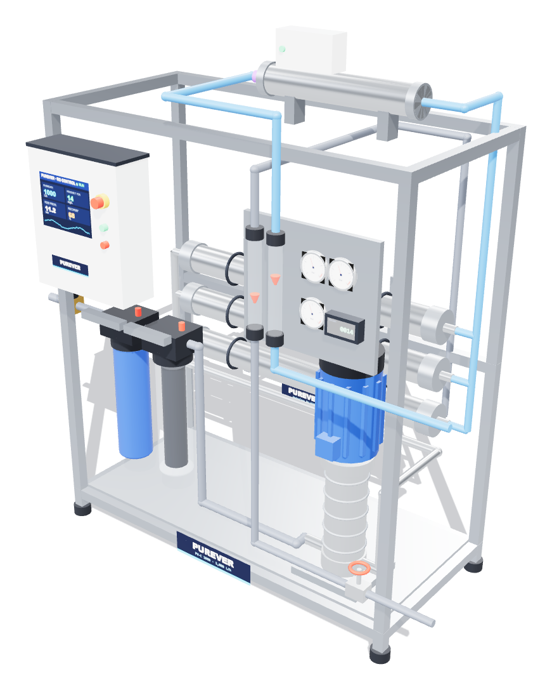
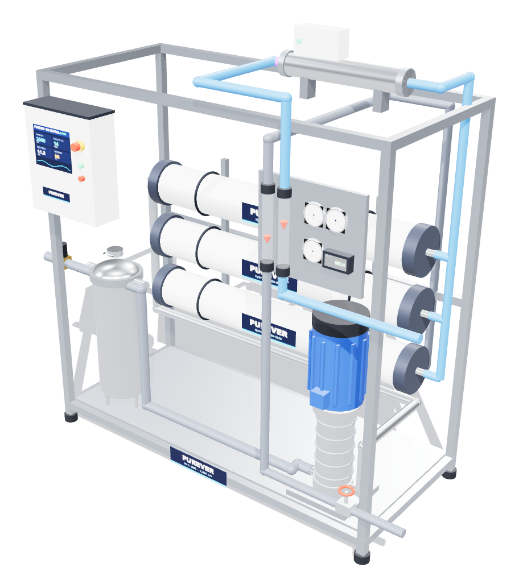
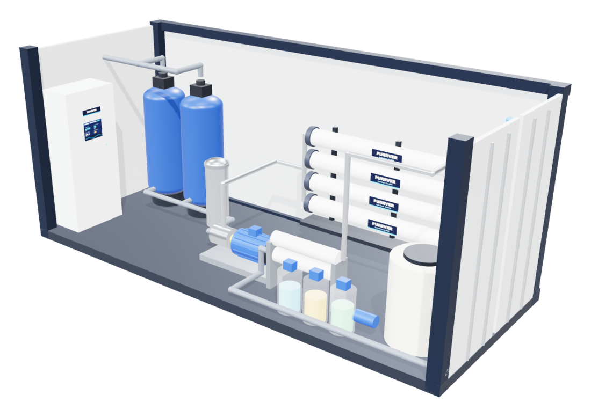
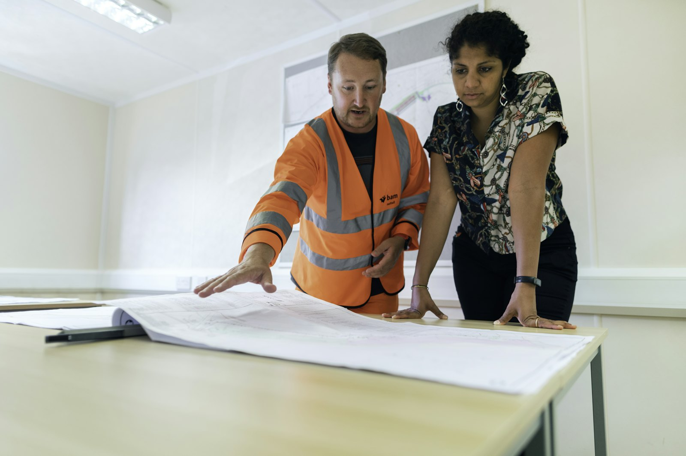
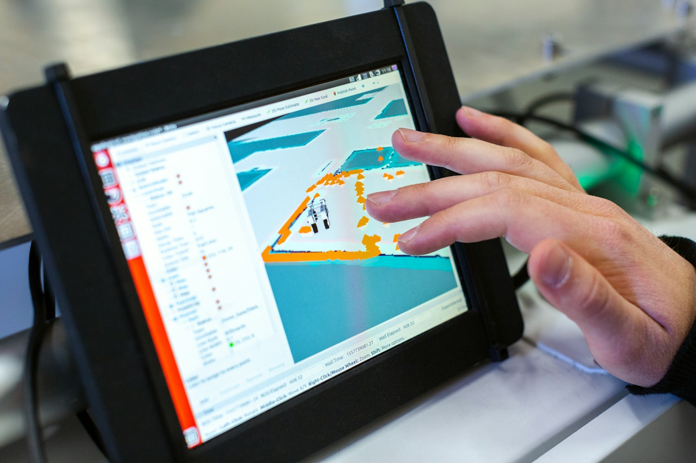

Engineering the world’s purest water.
From under-sink purifiers to containerised seawater desalination, PUREVER designs, builds and supports reverse osmosis and water treatment systems for partners on five continents. Engineered in the United Kingdom.
One engineering platform.
Every scale of water.
The same membrane science, pressure engineering and quality control run through every PUREVER system, whether it serves one kitchen or a city.
Home & Point-of-Use
Five-stage under-sink RO, whole-house sediment and carbon filtration, UV protection.

Commercial RO
Compact skids for hotels, clinics, restaurants and bottled-water producers.

Industrial Process Water
Multi-stage RO and UF trains with PLC/SCADA control, CIP and remote monitoring.

Containerised Desalination
Plug-and-play SWRO with isobaric energy recovery, down to 3 kWh/m³.
Four platforms.
One standard of engineering.
Every PUREVER system shares the same stainless construction, high-rejection membranes and factory testing, scaled from a 500 LPH commercial skid to a containerised seawater plant.

Engineers behind every litre.
Every PUREVER system starts with a conversation and a water analysis. Our process engineers, fabricators and field technicians follow it from the first P&ID to final commissioning, and they stay on the end of the line for its whole working life.
- Process design, membrane projections and 3D layout in the UK
- Factory acceptance testing on every skid before shipment
- Local commissioning and service through regional partners
Trusted where water
quality is non-negotiable.
Application engineers with sector experience help partners meet the regulations, uptime targets and water quality limits that matter to their customers. See all industries →
Two billion people still lack safely managed drinking water. Every system we build changes that number for someone.

Model your plant before you build it.
Our RO process simulator uses the same solution-diffusion equations as our engineers. Change salinity, pressure, temperature and recovery and watch flux, salt rejection and energy respond, with an animated P&ID and a live molecular view of the membrane.
Proven on five continents.
A selection of systems delivered through the PUREVER partner network.
Ready to engineer your water?
Send us your water analysis and the capacity you need. A PUREVER application engineer will reply within one business day with a preliminary design and budget.